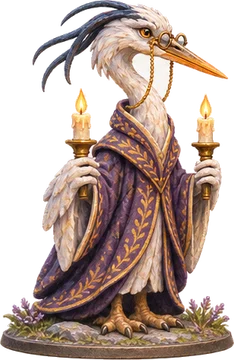
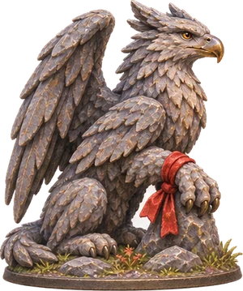
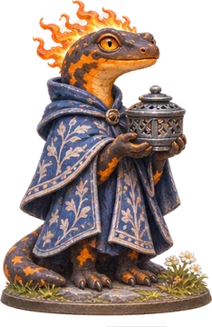
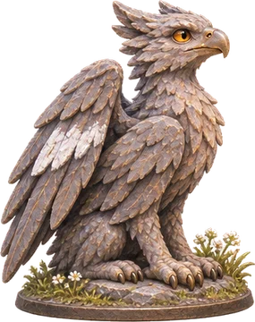
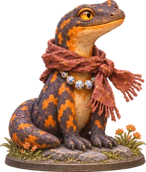
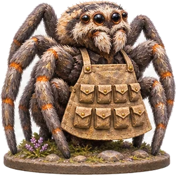
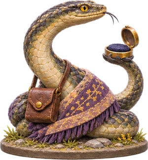
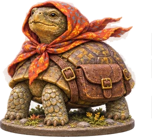
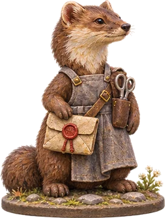
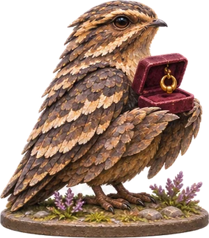

Суд Фонарей
Карты и фигурки ведущего
Игровой комплект
3 игрока · 4 игрока · 5 игроков · 6 игроков · 7 игроков
Карта кампании

Поля боя
Герои
Персонажи ведущего

Эйра, цапля-председательница
Кард Серый Утёс
Веш Тихая Искра
Пика Белая Кромка
Реми Угольный Нос
Уля Восемь Петель
Норс, речной уж-писец
Мора Круглый Панцирь
Бела Прямая Линия
Аска Бронзовое Перо